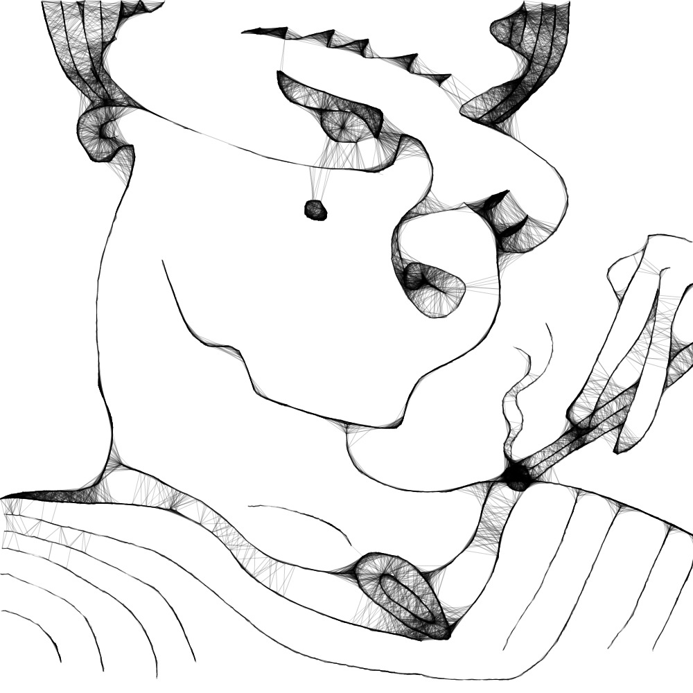

<style>
{% capture raw_scss %}
	body {
		margin: 1em;
		background:
			radial-gradient(hsl(0, 100%, 27%) 4%, hsl(0, 100%, 18%) 9%, hsla(0, 100%, 20%, 0) 9%) 0 0,
			radial-gradient(hsl(0, 100%, 27%) 4%, hsl(0, 100%, 18%) 8%, hsla(0, 100%, 20%, 0) 10%) 50px 50px,
			radial-gradient(hsla(0, 100%, 30%, 0.8) 20%, hsla(0, 100%, 20%, 0)) 50px 0,
			radial-gradient(hsla(0, 100%, 30%, 0.8) 20%, hsla(0, 100%, 20%, 0)) 0 50px,
			radial-gradient(hsla(0, 100%, 20%, 1) 35%, hsla(0, 100%, 20%, 0) 60%) 50px 0,
			radial-gradient(hsla(0, 100%, 20%, 1) 35%, hsla(0, 100%, 20%, 0) 60%) 100px 50px,
			radial-gradient(hsla(0, 100%, 15%, 0.7), hsla(0, 100%, 20%, 0)) 0 0,
			radial-gradient(hsla(0, 100%, 15%, 0.7), hsla(0, 100%, 20%, 0)) 50px 50px,
			linear-gradient(45deg, hsla(0, 100%, 20%, 0) 49%, hsla(0, 100%, 0%, 1) 50%, hsla(0, 100%, 20%, 0) 70%) 0 0,
			linear-gradient(-45deg, hsla(0, 100%, 20%, 0) 49%, hsla(0, 100%, 0%, 1) 50%, hsla(0, 100%, 20%, 0) 70%) 0 0;
		background-color: #7d000c;
		background-size: 100px 100px;
		color: yellow;
	}

	figure {
		width: 500px;
		margin: 4em auto;
		text-align: center;
	}

	img {
		max-width: 100%;
		box-sizing: border-box;
		border: outset 10px #ccc;
		box-shadow: 0 0 5px 0 rgba(#000, 0.25) inset, 0 5px 10px 5px rgba(#000, 0.25);
	}

	figcaption {
		margin-top: 1em;
		font-weight: bold;
		font-size: 1.5em;
		letter-spacing: 2px;
		a {
			color: yellow;
			border-bottom: 3px double yellow;
			text-decoration: none;
		}
	}
{% endcapture %}{{ raw_scss | scssify }}
</style>
<figure>
	
	<figcaption>
		"<a href="{{ site.baseurl }}/gallery/vagabond">Where</a> do you see yourself in one hundred years?"
	</figcaption>
</figure>
